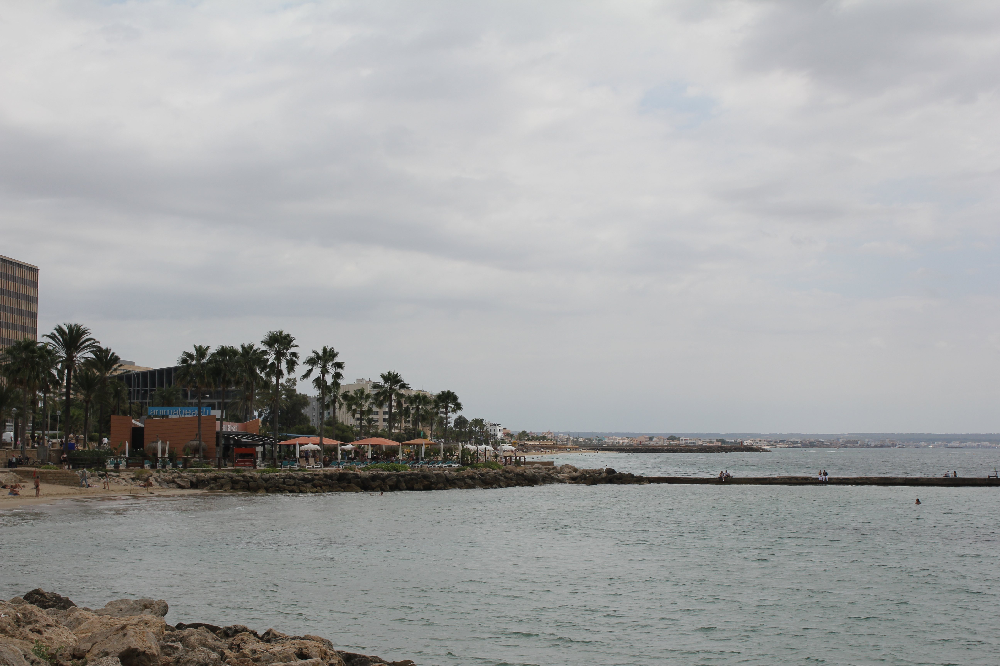
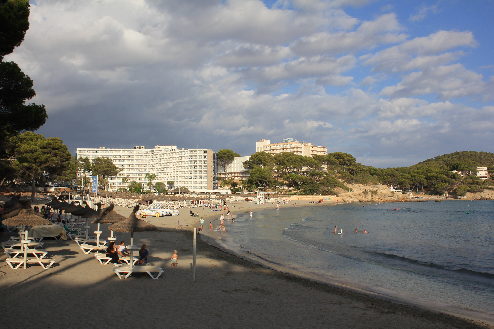
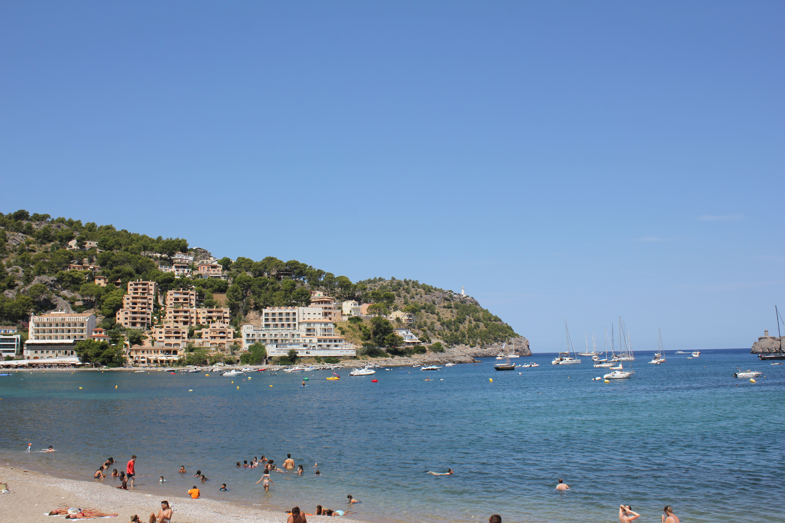
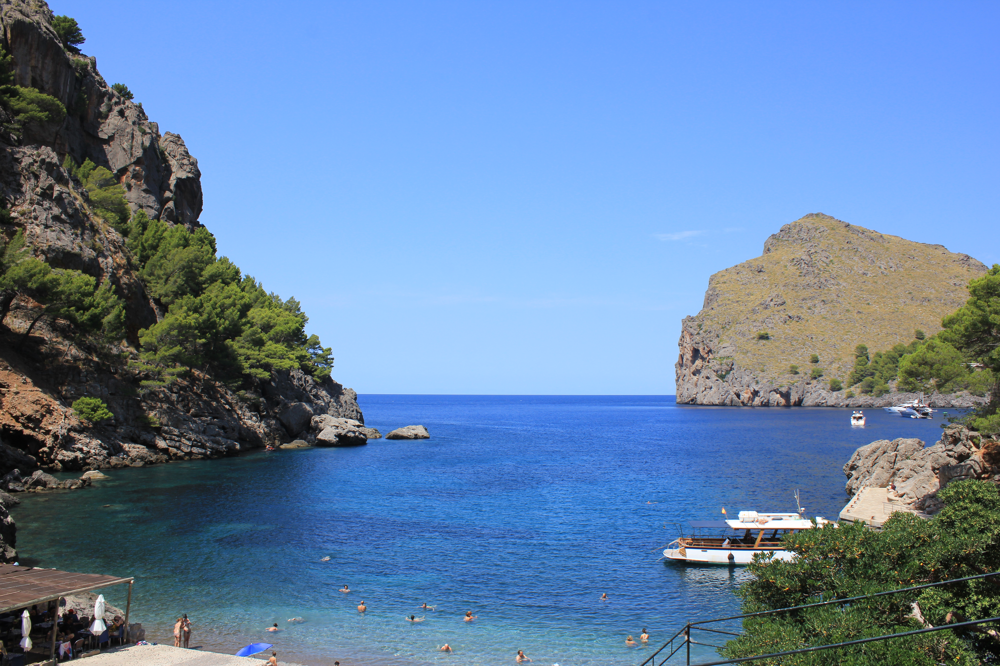
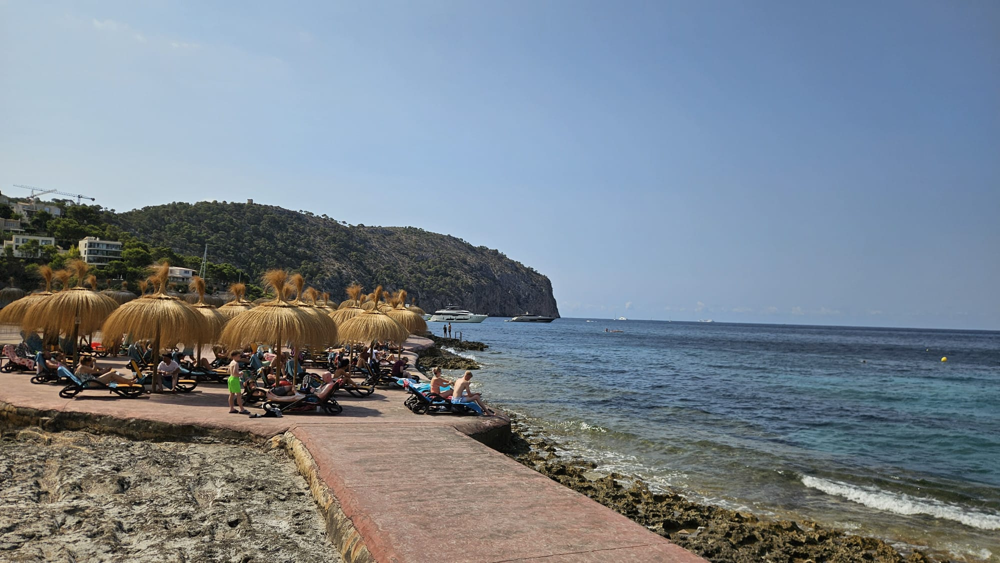

The beach of Palma de Mallorca
Reviewers describe Palma as a vibrant capital city with historic landmarks (Almudaina Palace &
Bellver Castle), a 6 km beach with clear water, shallow swimming areas and numerous bars and
restaurants. Comments mention the lively party scene and proximity to Magaluf, noting that it is
easy to take a taxi to nightlife. Many visitors simply call it a “beautiful city” with plenty to see
and do.

The beach of Santa Poca
Google‑reviewers praise the expansive golden sand beach and calm, clear waters that are excellent
for families and sunset watching. They appreciate the lively promenade and accessible boardwalk with
wheelchair‑friendly areas; beach parasols include lockers for valuables and a beach wheelchair can
enter the sea. Comments note that the west‑facing beach offers spectacular sunsets and that sunbeds
and parasols are available to rent.

The beach of Port de Soller
Reviewers call this harbour village on Mallorca’s northwest coast a picturesque escape. They
highlight the smooth water entrance that’s ideal for families, the scenic wooden tram connecting the
port with Sóller, and abundant cafés and restaurants along the promenade. Positive comments mention
taking the old tram or bus to the bay, swimming, then enjoying a drink at the waterfront bars. Some
visitors note that half of the bay is full of boats and the other half a busy beach; off‑season
there may be little to do besides stroll the harbour.

The beach of Palma de Mallorca
Located on Mallorca’s rugged northwest coast, this site is famous for its winding road and pebble
beach. Google reviewers note that the drive down is challenging but offers breathtaking scenery;
many arrive by catamaran from Port de Sóller or via the twisting road. Visitors highlight the two
small pebble beaches and the nearby Torrent de Pareis gorge; they recommend sturdy footwear (the
beach is rocky), parasols and plenty of water and snacks.Reviewers also mention cafes, shops and
tunnels on the way, and comment that the area is popular with cyclists and hikers.

The beach of La Font de la Cala
Visitors describe this small cove near Capdepera as a hidden gem. Reviews note crystal‑clear
light‑blue water ideal for swimming and snorkelling and mention snack bars, lifeguard service and
shaded pine trees. Families appreciate the white‑sand beach and safe swimming; some reviewers
suggest bringing snorkelling gear and note that rock formations and seaweed must be crossed to reach
deeper water. Others mention expensive parasol rentals and the lack of showers, but overall the
beach is praised for its tranquil atmosphere.
